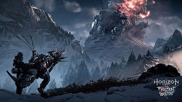

Post #1
Horizon Zero Dawn Review – história do jogo A protagonista é Aloy, uma moça ruiva, órfã e muito perspicaz. Quando o jogo começa, Aloy é apenas uma criança rejeitada pelas comunidades tribais que habitam o planeta. Comunidades tribais? Oi? Como falamos no início, este é um jogo baseado num universo pós-apocalíptico. Horizon Zero Dawn inovou no contexto, trazendo um conflito diferente dos zumbis, walkers, vírus mortais, guerras mundiais e etc e isso é um ponto bastante positivo para a narrativa. Porém, antes de falarmos sobre a história de Aloy, vamos explorar melhor o universo dessa história.